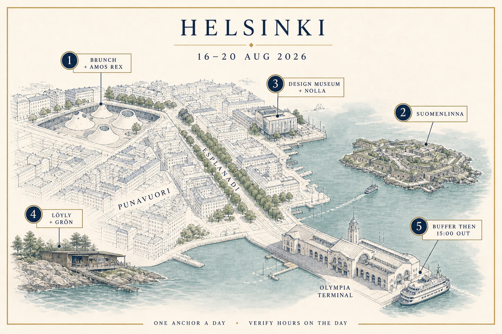
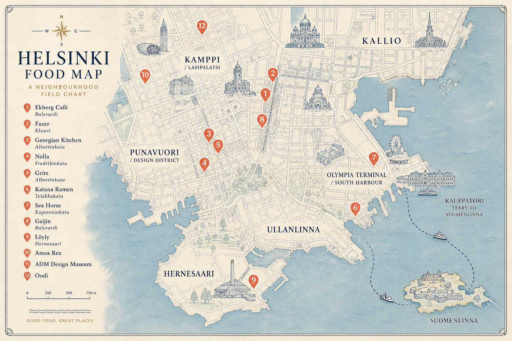

Sun 16
Hello Helsinki
- 10:30 Olympia
- 11:30 Ekberg brunch
- 13:45 Amos Rex (Sun 11–17)
- 17:00 Oodi (Sun 10–20)
- 19:00 Georgian Kitchen
Arrive Olympia Terminal Sunday 16 Aug ~10:30 on Silja Symphony. Leave Thursday 20 Aug 15:00 — check your ticket for airport vs ship. Hours read 15 Aug 2026. They move.
Thesis: fortress island · underground museum · sauna on the sea · Georgian table · one Nordic kitchen if a table exists.
Book before you sleep
The week


Open / closed
| Place | Sun 16 | Mon 17 | Tue 18 | Wed 19 |
|---|---|---|---|---|
| Ekberg brunch | 9–14:30 | breakfast only | breakfast only | breakfast only |
| Georgian Kitchen | 13–22 | 15–23 | 15–23 | 15–23 |
| Gaijin | dinner 15:00 | dinner 16:30 | lunch maybe | dinner 16:30 |
| Nolla | closed* | closed* | dinner* | dinner* |
| Grön | closed | closed | closed | dinner 188e |
| Latitude 25 | closed | closed | closed | 17–21:30 |
| Skörd | closed* | dinner* | dinner* | 86e / 72e |
| Kuurna | closed | 17–23 | 17–23 | 17–23 |
| Katana Ramen | closed?* | 11–21* | 11–21* | 11–21* |
| Sea Horse | 15–24 | 15–24 | 15–24 | 15–24 |
| Kosmos | closed | 11:30–24 | 11:30–24 | 11:30–24 |
| Amos Rex | 11–17 | 11–20 | closed | 11–20 |
| Momotoko | dead | dead | dead | dead |
* secondary source or inferred. Verify in the booker.
Shouldn’t miss
| Place | Kind | Why |
|---|---|---|
| Ekberg | Brunch | Oldest café. You walk into Punavuori instead of a terminal. |
| Georgian Kitchen | Neighbourhood | The cuisine you named, family room, open Sunday. |
| Nolla | Nordic | Zero-waste, Bib Gourmand, the AG-equivalent without a 188e bill. |
| Grön | Star | Official summer 2026 menu 188e. Wednesday only. |
| Katana / Bui | Ramen | Momotoko is dead. Katana is central; Bui is real but Kalasatama (Paitan 17.90€ official). |
| Latitude 25 / Shii / Domo | Sushi | Omakase Wednesday; Domo is à la carte, not buffet. Hours for Domo/Shii VERIFY. |
| Sea Horse / Kosmos / Elite | Finnish classic | 1933 / 1924 / 1932 rooms. Not a log-cabin tourist show. |
| Gaijin | Hot Helsinki | North-Asia sharing plates next to Ekberg. |
| Sansar / Mountain | Nepalese lunch | Ordinary diaspora rooms visitors skip. Search Sansar, not Satkar. |
| BasBas / Harju 8 | Wine / small plates | BasBas closed Sun–Mon. Harju 8 is the walk-in Kallio living room. |
| Cella / Kannas | Finnish neighbourhood | Non-grand classics. Cella hours only published through Mon 17. |
| Levain Ullanlinna | Bakery | Korkeavuorenkatu 21, next door to ADM, daily 8–16. |
Bookable, not obligatory